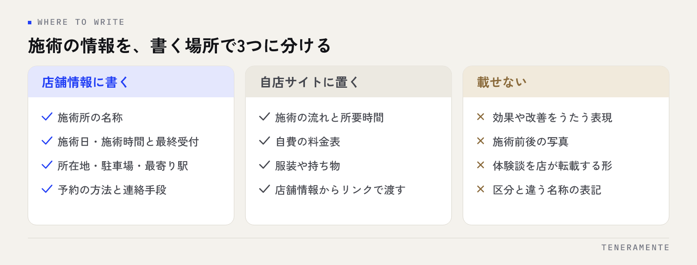

腰や肩の痛みが出た人が「近くの整体」「駅名＋接骨院」と調べ、地図の一覧から1店を選ぶ。初めて通う店を決める判断は、この短い時間で済んでいます。整体・接骨院のMEO対策で先に効くのは、施術の良さを伝える表現を探すことより、初回の不安を消す事実を埋めることです。
📌 この記事の結論
探している人が一覧で確かめているのは「今日やっているか」「初回はいくらで何分かかるか」「どこに入るのか」の3つです。この3つは広告の制限に触れずに書ける情報なので、ここから先に埋めます。施術の効果に関わる表現は、書ける範囲を確認してから自店サイト側で扱ってください。
01整体・接骨院のMEO対策は、書ける範囲を分けてから始める
整体・接骨院で情報の出し方が難しくなるのは、施術所の広告に法令上の制限がかかる点です。柔道整復師法では広告できる事項が定められているとされ、施術所の名称、施術日や施術時間、施術者の氏名といった範囲が挙げられています。効果や適応症を広く書くことは、想定されていません。

そのため、集客に効きそうな言葉を探す作業から入ると手が止まります。先に、確認なしでそのまま書ける事実と、書き方の確認が必要な表現を分けてしまうほうが速く進みます。
分けたうえで、前者から埋めます。営業時間、定休日、所在地と目印、駐車場、予約の方法。ここは迷う余地がなく、しかも探している人が最初に確かめる範囲とほぼ重なります。判断に迷う表現は、所管の都道府県の窓口に照会してください。この記事は一般的な整理であり、個別の表現の適否を保証するものではありません。
02最初に埋めるのは営業時間と、受付の締め時間
最初に直すのは営業時間です。来店の判断が「今日これから受けられるか」で始まるためです。
この業種で特に合わせておきたいのが、営業終了時刻と受付終了時刻のずれです。施術に時間がかかるため、20時まで営業していても最終受付は19時、という形が普通にあります。営業時間だけを登録していると、閉店間際の来店や電話が発生します。最終受付の時刻は、営業時間とは別に説明文や属性の中で明示してください。
あわせて設定したいのが特別営業時間です。祝日、年末年始、研修や学会による臨時休業を日付指定で入れておけば、その日だけ別の表示になります。設定の考え方は特別営業時間の設定方法にまとめています。年のはじめに祝日の扱いをまとめて入れておく形が、抜けにくく続けやすいです。
03カテゴリは、実際の施術と届出の区分に合わせる
カテゴリは、どの検索に対して表示されるかに関わる項目です。メインカテゴリを1つ選び、実際に行っている施術の範囲を追加カテゴリで補います。
迷いやすいのが、看板に掲げている名前と、探している人が使う言葉のずれです。「整体」「整骨院」「接骨院」「鍼灸」「マッサージ」は、利用者の側ではほぼ同じ括りで検索されますが、届出の区分としては別物です。追加カテゴリは実際に行っている施術であれば複数選べるので、区分に対応するものを漏らさず入れてください。
一方で、行っていない施術を集客目的で入れるのは避けてください。来店後のずれが口コミとして残り、次に探している人の判断を誤らせます。カテゴリの選び方の基本は、業種を問わずカテゴリ選定の考え方と同じです。
名称と区分を誤認させる表記にしない
店舗名の欄に、実際の区分と違う語を足すのは避けてください。検索語を店舗名に詰め込む形は、Googleのガイドライン上も認められていません。看板に出していない語は、カテゴリと説明文の側で扱います。
04初回の不安は、料金・所要時間・服装で決まる
来店をためらう理由は、施術の内容ではありません。いくらかかるのか、どれくらい時間が取られるのか、何を着ていけばよいのかが分からないことです。
このうち店舗情報の中で短く書けるのは、初回の目安料金と所要時間です。回数券や複数のコースがある場合は、店舗情報に全部を並べず、初回に必要な分だけを書いてください。詳しい料金表や施術の流れは自店サイトの該当ページに置き、店舗情報からはそこへ導線を引く形が無難です。
服装や持ち物のような細かい点は、商品・サービスの項目や投稿で補えます。保険の取扱いについて触れる場合は、認められた範囲の表記に留め、適応するかどうかの判断は来院時の説明に委ねる形にしてください。
05写真は、外観と入口、そして施術スペース
写真は、外観、入口、受付、施術スペース、駐車場の順に用意してください。初めて通う人が不安に感じるのは、建物の中のどこに入ればよいか分からないことです。
とくに効くのが入口の写真です。ビルやマンションの一室で営業している場合、何階のどの扉かが分からず、入口の前で引き返されます。エレベーターの位置や階数表示が写っていれば、それだけで解決します。
施術スペースの写真では、区切りの有無が伝わるように撮ってください。ベッドが並んでいるのか、個室なのかは、来店の判断に直接関わります。撮るときは写り込みの確認を必ず行い、他の利用者が写った写真は公開しないでください。どの写真をどの枠に使うかはプロフィールの写真の選び方にまとめています。
06口コミは、施術後の一言と、返信の線引き
口コミは、利用者が投稿した第三者の発信であり、店が自ら出す広告とは扱いが異なるとされています。この業種で有利なのは、施術が終わった直後に直接話せる場面があることです。
ただし、施術の場で投稿を求める形は、相手が断りにくい状況を作ります。会計時の案内や院内の掲示など、断れる形に留めてください。集め方そのものについてはGoogle口コミを増やす方法にまとめています。
注意が必要なのは返信です。返信は店の発信なので、ここで施術の内容に踏み込むと、利用者の通院歴や症状に店が触れる形になります。「その症状であれば」「前回の施術では」といった書き方は避け、来院いただいたことへの言及と、運用として改めた点を短く書くまでに留めてください。厳しい内容への向き合い方は低評価の口コミへの対応が参考になります。
07予約の受け口を、電話以外にも1つ用意する
この業種で取りこぼしが起きやすいのは、施術中に電話が鳴る時間帯です。地図から電話をかけた人は、出なければそのまま次の店に移ります。
| 予約の受け口 | 向いている場面 | 決めておくこと |
|---|---|---|
| 電話 | すぐ受けたい人、年齢層が高い場合 | 施術中の取り方、留守番電話の案内文 |
| 予約サイトのURL | 時間帯から選びたい人 | 枠の更新担当、当日枠を出すかどうか |
| メッセージ | 症状を先に相談したい人 | 返信する時間帯、返信の担当 |
| Webフォーム | 営業時間外に申し込む人 | 確認の頻度、折り返しまでの時間 |
全部を用意する必要はありません。電話に加えてもう1つ、確実に見られる受け口を決めるだけで、施術中の時間帯が空白になりません。属性の項目には駐車場やバリアフリー、支払い方法が登録できるので、ここも絞り込みで外れないように埋めておいてください。
留守番電話の案内文を決めておく
施術中に出られないことは避けられません。留守番電話の案内で「施術中のため、折り返しは◯時以降になります」と時間の見通しを伝えておくと、待ち続けさせずに済みます。文面を決めて貼っておく形が確実です。
整体と接骨院で、やることは変わりますか？
施術前後の写真や、利用者の声を載せてもよいのでしょうか？
分院や、出張施術がある場合はどう登録しますか？
08まとめ：月1回の確認で、整えた状態を保つ
整体・接骨院の店舗情報は、受付時間の変更、施術者の入れ替わり、臨時休業の追加で崩れていきます。確認は月1回、同じ項目で回すのが続けやすい形です。
見るのは、営業時間と最終受付、特別営業時間、カテゴリ、予約の受け口、新しい写真、未返信の口コミの6つです。担当を決めて、月初に見る運用にしてください。Googleビジネスプロフィールにはルート検索や通話の回数が見られる画面があるので、順位が見えなくてもここが動いているかで手応えは確認できます。
進める順番は、営業時間と最終受付 → カテゴリ → 初回の料金と所要時間 → 写真 → 口コミ運用 → 予約の受け口です。施術の効果に関わる表現は、書ける範囲を確認してから自店サイト側で扱ってください。順番を逆にすると、表現の確認待ちで全体が止まります。
TENERAMENTEなら、この順番に沿って事実の項目を埋めたうえで、最終受付をどこに書くか、口コミ返信で触れない範囲をどこに引くか、施術中の電話をどの受け口で受けるかまで決めた状態でお渡しします。表現の可否を毎回店内で判断し直す手間がなくなり、受付時間や施術者の体制が変わったときだけ手を入れる運用に落ち着きます。MEO対策の進め方をご覧いただいたうえで、お問い合わせからお気軽にご相談ください。